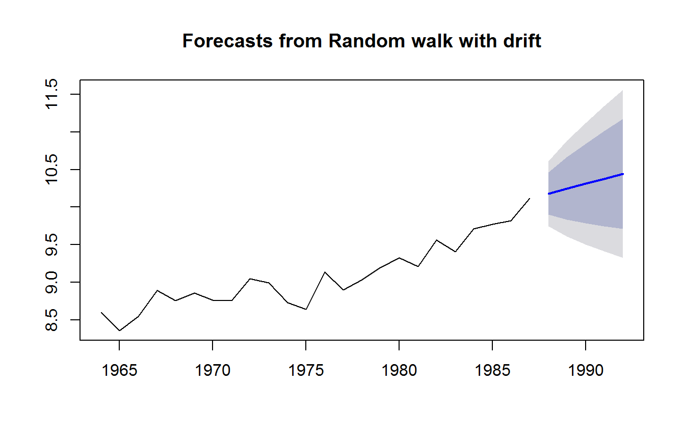
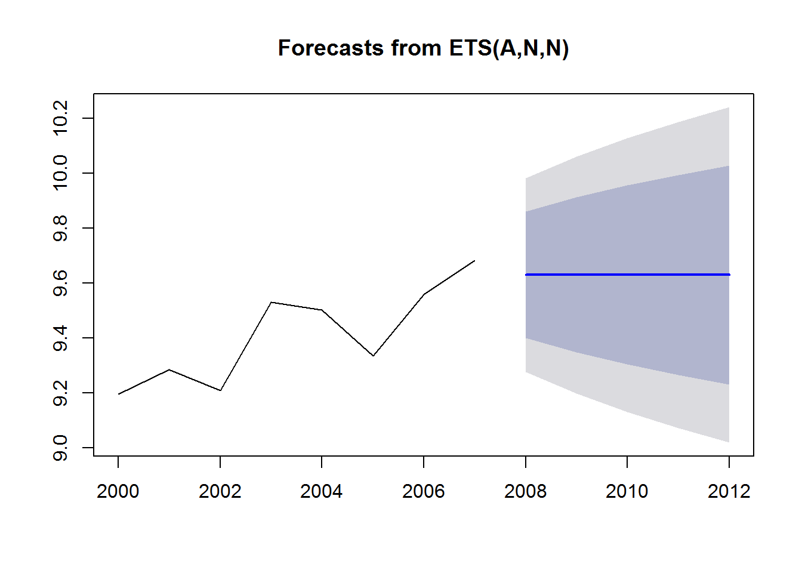

4.1 Simple Exponential Smoothing with Trend
The simple exponential model has a level that evolves over time, but there is no trend, a tendency to go up or down. If a time series has a trend then we might want to include this in our forecast.
Naive model with drift
The naive model with drift is a simple example of a model with level and trend. This model uses the last observation as the forecast but includes a trend estimated from ALL the data.
\[\hat{x}_{T+1} = x_T + \bar{b}\] where \(\bar{b}\) is the mean trend or change from one time step to the next (\(x_t-x_{t-1}\)). \[\bar{b} = \frac{1}{1-T}\sum_{t=2}^T (x_t - x_{t-1})\]
We can fit this with forecast::Arima().
fit.rwf <- forecast::Arima(anchovy87ts, order=c(0,1,0), include.drift=TRUE)
fr.rwf <- forecast::forecast(fit.rwf, h=5)Alternatively we can fit with rwf() which is a shortcut for the above lines.
fr.rwf <- forecast::rwf(anchovy87ts, h=5, drift=TRUE)A plot of the forecast shows the forecast and the prediction intervals.
plot(fr.rwf)
The trend seen in the blue line is estimated from the overall trend in ALL the data.
coef(fit.rwf)## drift
## 0.06577281The trend from all the data is (last-first)/(number of steps).
mean(diff(anchovy87ts))## [1] 0.06577281The naive model with drift only use the latest data to choose the level for our forecast but uses all the data to choose the trend. It would make more sense to weight the more recent trends more heavily.
4.1.1 Exponential smoothing model with trend
The exponential smoothing model has a level term which is an exponential weighting of past \(x\) and a trend term which is an exponential weighting of past trends \(x_t - x_{t-1}\).
\[\hat{x}_{T+1} = l_T + b_T\] where \(b_T\) is a weighted average with the more recent trends given more weight.
\[b_T = \sum_{t=2}^T \beta (1-\beta)^{t-2}(x_t - x_{t-1})\] The value of \(\beta\) determines how much past trends affect the trend we use in our forecast.

Fit with ets()
To fit an exponential smoothing model with trend, we use `model=“AAN”.
fit <- forecast::ets(anchovy87ts, model="AAN")
fr <- forecast::forecast(fit, h=5)
plot(fr)
4.1.2 Simple ETS models with ets()
The forecast package will fit a wide variety of exponential smoothing models.
ets(y, model = "ZZZ", < + many other arguments >)y : your data. A time series of responses.
model: what type of exponential smoothing model.
We have used ets() to fit simple exponential smoothing models with and without trend. We can also let ets() choose whether or not to include a trend.
| model | “ZZZ” | alternate function |
|---|---|---|
| exponential smoothing no trend | “ANN” | ses() |
| exponential smoothing with trend | “AAN” | holt() |
| exponential smoothing choose trend | “AZN” | NA |
The alternate function does exactly the same fitting. It is just a ‘shortcut’.
4.1.3 Produce forecast using a previous fit
Say you want to estimate a forecasting model from one dataset and use that model to forecast another dataset or another area. Here is how to do that.
This is the fit to the 1964-1987 data:
fit1 <- forecast::ets(anchovy87ts, model="ANN")Use that model with the 2000-2007 data and produce a forecast:
dat <- subset(landings, Species=="Anchovy" & Year>=2000 & Year<=2007)
dat <- ts(dat$log.metric.tons, start=2000)
fit2 <- forecast::ets(dat, model=fit1)## Model is being refit with current smoothing parameters but initial states are being re-estimated.
## Set 'use.initial.values=TRUE' if you want to re-use existing initial values.fr2 <- forecast::forecast(fit2, h=5)plot(fr2)